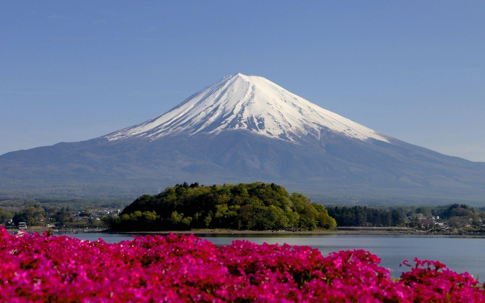
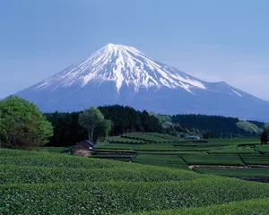

Mount Fuji’s nearly symmetrical cone dominates the surrounding landscape and is visible from great distances on clear days. The base of the volcano is about 78 miles (125 km) in circumference and has a diameter of some 25 to 30 miles (40 to 50 km). At its summit the crater spans about 1,600 feet (500 meters) in diameter and sinks to a depth of about 820 feet (250 meters). Around the jagged edges of the crater are eight peaks—Oshaidake, Izudake, Jojudake, Komagatake, Mushimatake, Kengamine, Hukusandake, and Kusushidake.

On the northern slopes of Mount Fuji lie the Fuji Five Lakes (Fuji Goko), comprising, east to west, Lake Yamanaka, Lake Kawaguchi, Lake Sai, Lake Shōji, and Lake Motosu, all formed by the damming effects of lava flows. The lowest, Lake Kawaguchi, at 2,726 feet (831 meters), is noted for the inverted reflection of Mount Fuji on its still waters.
Environmental conditions vary sharply with elevation. The lower slopes are forested, while above the forest line the mountain is largely barren, with volcanic rock, ash, and only sparse vegetation. At its base Mount Fuji has a temperate to subtropical climate, with warm, humid summers and cooler winters. At the summit, conditions are alpine, with average temperatures ranging from about −2.2 °F (−19 °C) in winter to roughly 44 °F (6.8 °C) in summer. Annual precipitation averages about 89 inches (2,272 mm), with the heaviest rainfall occurring in summer. The summit is covered with snow for much of the year, typically beginning in early autumn. In recent years environmental changes on the mountain, including an upward shift of the tree line and rising temperatures at the summit, have been linked to changing climatic conditions.